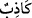
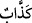
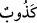

ortak koşmak sûretiyle dinde ihtilâf etmelerinde ve her bölüğün kendi gittiği yolun
doğru olduğunu iddiâ etmesi konusunda “aralarında” putlar edinen ve dîni Allah’a has
kılmayanlar ile onların hasımları olan dîni Allah’a has kılanlar arasında “hüküm
verecektir.” Allah’ın bu hususta hüküm vermesi, muvahhidleri cennete ve müşrikleri
cehenneme sokması demektir.
“Şüphesiz Allah, yalancı ve inkârcı” “ kelimesinin “ ve “ şeklindeki
kıraatin de ifâde ettiği üzere yalancılıkta derinleşmiş, nankörlük ve inkârda aşırı giden
“kimseyi doğru yola iletmez.” Her tür istenmeyen durumdan kurtulup istenen herşeyi
elde etmenin yolu olan hakka ulaşmaya muvaffak kılmaz. Çünkü bu iki zümre, dalalette
ısrar edip mütemadiyen azgınlık etmek sûretiyle asli fıtratlarını değiştirdikleri için,
basîretlerini kaybetmiş olup artık doğru yola gelme kaabiliyetine sâhip değildirler.
el-Vasît’ta şöyle der: “Bu, hidayetten mahrum kalacağına dâir daha önceden
haklarında ilâhî hüküm (kazâ) bulunan kişiler hakkındadır. Dolayısıyla o asla doğruluğa
ve îmâna yol bulamaz.
Hâfız der ki:
Kara taş, can verse bile yine lal olamaz
Ne yapsın? Yaratılışı kötü bir kere
Müşriklerin âyette bahsedilen yalanları, bazı dostları hakkında ‘Allah’ın kızları ve
oğlu’ demeleri, ilâhlarının kendilerine şefâat edeceğini ve Allah’a yaklaştıracağını
iddiâ etmeleridir. Onların inkârları ise bu dostlarına tapınmaları, nimete nankörlük
etmeleri ise gerçek nimet vereni unutmalarıdır.
et-Te’vîlâtü’n-Necmiyye’de der ki: “İnsan gerek kendisini yaratanı (Sâni’) gerekse
âlemi yaratanı tanıma eğiliminde yaratılmıştır. Tabîatının gereği yaratanına ibâdet
etmektir. O’na yaklaşmaya çalışmak Allah’ın insanları kendisi üzere yarattığı fıtratın
özelliklerindendir. Fakat fıtrî ma’rifete ve tabîî ibâdete îtibar edilmez. Çünkü bunlar
Allah dışındaki birtakım varlıkları O’na ortak koşma şâibesine bulanmış durumdadır.
Yine nefsin dinçliğinden ve nefsin heveslerine tâbi olmaktan dolayı ortaya çıkmaktadır.
Ancak hâlis bir tevhîdden sâdır olan ma’rifete îtibar edilir.
Peygamberlerin dâvetini kabul etmek, gerek peygamberlere gerekse onlara indirilen
kitaplara îman etmek, hevâya karşı koymak, tabîat uyarınca değil şerîata uygun olarak
ibâdet etmek, hem Allah’ın kendilerine farz kıldığı şeyleri hem de Hz. Peygamber (s.a.)’
in bizzat kendisini ya da benzerini sünnet kıldığı nafileleri edâ etmek sûretiyle Allah’a
yaklaşmaya çalışmak böyle bir ma’rifete sâhip olmanın emârelerindendir. Çünkü
Allah’a secde etmek İblis’in tabîatında vardı. Tabîatı hilâfına bir şeyle emrolununca yüz
çevirdi, büyüklük tasladı ve mukarreb meleklerin arasına katıldıktan sonra kâfirlerden
oldu. Peygamberlere bey’at etmeyen, Allah’ı tanıma iddiâsında bulunan; çeşitli ilimler,
şerîatla değil, tabîatla ve Mevlâ’nın emriyle değil hevânın emriyle türlü tâatler ve
ibâdetler yoluyla Allah’a yaklaşmaya çalışan filozofların durumu da böyledir. Onların